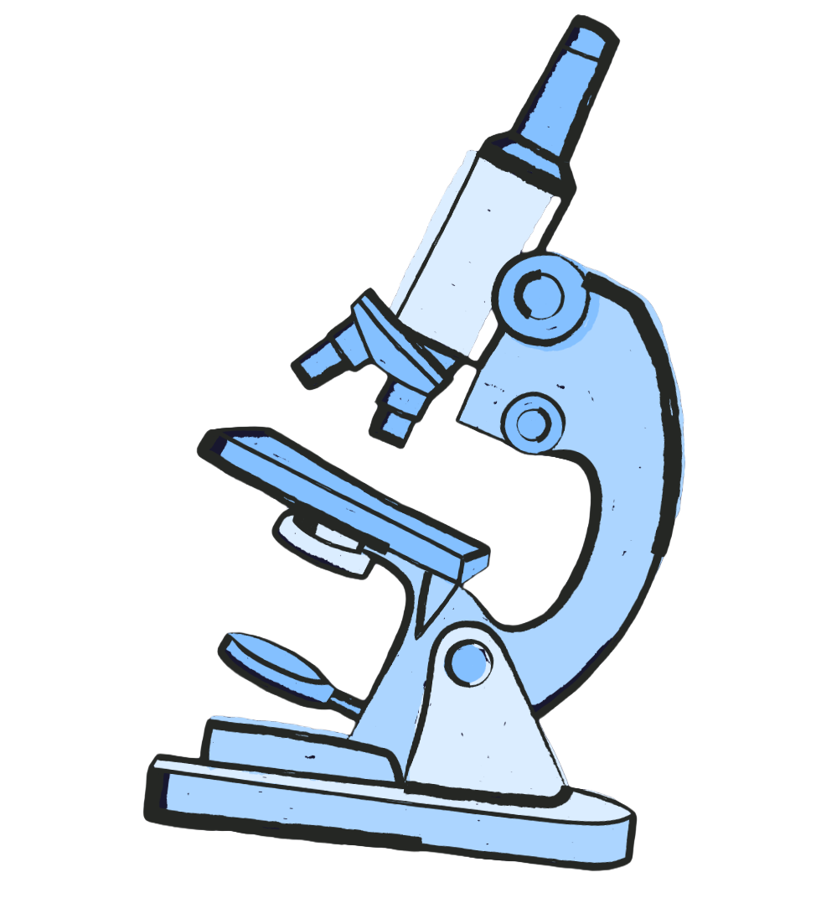

We help students navigate science literacy and spread innovation

Our Students Go To...
Hear how UrbanBEARS has shaped students across the U.S. and the world.
I joined UrbanBEARS thinking STEM was only for kids with fancy labs at school. Then I looked through a real microscope for the first time and I was hooked!
My mentor went through my first research abstract with me line by line. That paper ended up being the heart of my application, and I'm heading to Cornell for bioengineering.
I never met a scientist who looked like me until my mentor. She helped me turn my curiosity about prosthetics into an actual project. Now I know what I want to do!
The CRISPR workshop was the first time biology felt like building something. I wrote my Columbia essay about it and got in for biomedical engineering.
Honestly the best part was the people. Everyone is so welcoming, and every session felt like hanging out with friends who happen to love science.
Our school had no lab equipment before UrbanBEARS. Now we run hands-on sessions every week and everyone shows up. I'm studying chemical engineering at MIT next year!
I was so nervous to ask questions at first, but my mentor made it easy. Now I email her about everything, even stuff that has nothing to do with science.
I found UrbanBEARS on the resources page and ended up leading a chapter. Teaching workshops showed me I love building medical devices.
I'd never read a scientific paper before this program. Last month I presented my own research at a symposium. Still can't believe it!
Writing an article for the site was way more fun than I expected. My friends keep sending it around, and my mom has read it about ten times.
The mentorship program gave me a plan. I learned how to find research programs and apply to them, and I'm now going to Princeton to study molecular biology.
The first time we dissected a heart in a workshop I was grossed out and amazed at the same time. Best Saturday ever!
I used to think science was just memorizing facts. UrbanBEARS showed me it's about asking weird questions and then finding out the answer. I love it now.
Our chapter meetings are the highlight of my week. We laugh a lot, build stuff, and somehow learn a ton while doing it.
UrbanBEARS pushed me to apply for a summer research program, and I got in! A year ago I didn't even know those existed.
UrbanBEARS is a student-led organization aiming to increase participation and education in biomedical sciences and engineering in underserved communities that lack valuable hands-on, interactive STEM opportunities. We strive to enrich students in STEM by implementing free, accessible STEM chapters in schools that use interactive technologies to increase scientific literacy worldwide.
Support Our Journey Here